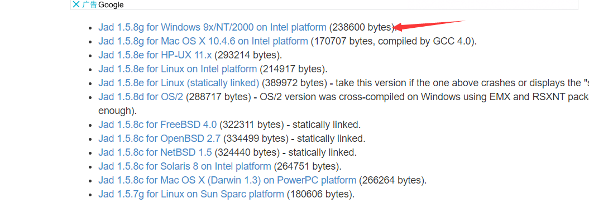
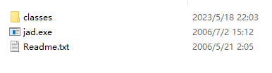
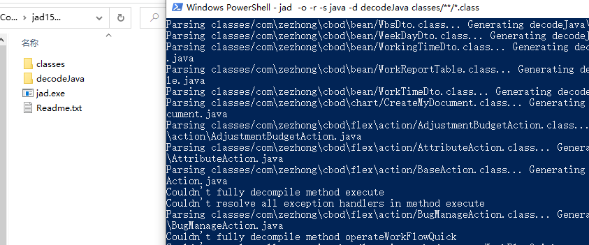
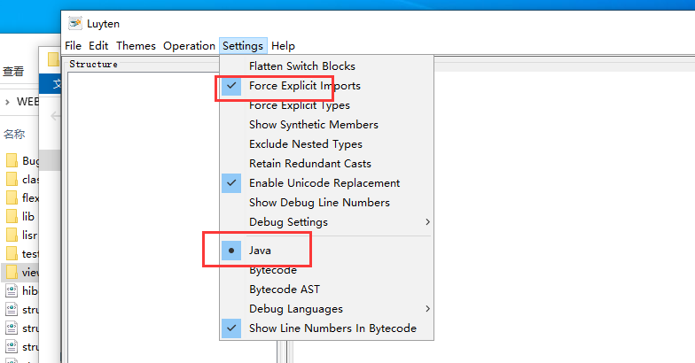
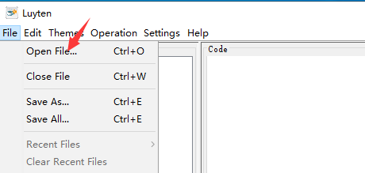
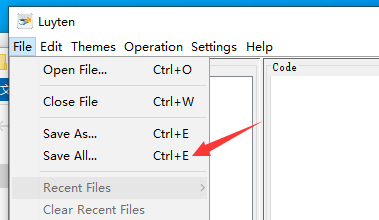

反编译jar的class文件
前言
我们在进行代码审计的时候，很多时候我们只能拿到jar或者war之类的部署包。直接解压jar包是class文件，虽然放在idea里面也可以解析查看内容，但是不能够编辑修改等。下面我们学习一下怎么反编译成Java文件（前提是jar没有被做过特殊处理）
JAD
下载：https://varaneckas.com/jad/

把classes文件放在文件夹后，放在jad同一个文件夹下面，执行命令

执行命令
1 | jad -o -r -s java -d decodeJava classes/**/*.class |
反编译之后的Java文件就在decodeJava文件夹下

Luyten
下载：https://github.com/deathmarine/Luyten
设置编码（中文乱码）
需进行下面的配置，反编译后的中文才能正常显示。否则，是 Unicode 编码

选择要反编译的 jar 文件

生成 & 保存反编译后的 java 文件

IDEA自带的插件
进行反编译
利用Idea直接查看引入的jar包，或者利用idea反编译插件，将jar包变成java文件。
Mac
1 | java -cp "/Applications/IntelliJ IDEA.app/Contents/plugins/java-decompiler/lib/java-decompiler.jar" org.jetbrains.java.decompiler.main.decompiler.ConsoleDecompiler -dgs=true *.jar "/Users/***" |
Window
1 | I:/java15/openjdk-15-36_windows-x64_bin/jdk-15/bin/java.exe -cp "I:/idea/IntelliJ IDEA 2020.1/plugins/java-decompiler/lib/java-decompiler.jar" org.jetbrains.java.decompiler.main.decompiler.ConsoleDecompiler -dgs=true *.jar "./result" |
参数说明
- idea自带的反编译插件我位置—— /Applications/IntelliJ IDEA.app/Contents/plugins/java-decompiler/lib/java-decompiler.jar
- 需要反编译的jar包——*.jar
- 结果输出位置——“/Users/***“
结果输出后还是一个jar文件，直接解压就可以，里面是.java格式的
碰到错误处理方式
- 我猜测该问题原因是idea自带jvm是11版本的，然后这个包是使用jdk11编译的
- 运行的时候用的是自己的环境，52就代表了1.8版本，低版本编译在高版本可以兼容运行，但是高版本的编译在低版本就无法运行
换成高版本的jdk解决
class version对应的版本
1 | Java 1.0 45.0 |
批量反编译
Mac
1 | for z in *.jar; |
Window（poweershell）
1 | foreach ($i in Get-ChildItem -Include *.jar -Recurse) { I:/java15/openjdk-15-36_windows-x64_bin/jdk-15/bin/java.exe -cp "I:/idea/IntelliJ IDEA 2020.1/plugins/java-decompiler/lib/java-decompiler.jar" org.jetbrains.java.decompiler.main.decompiler.ConsoleDecompiler -dgs=true $i "./result" } |
批量解压
Mac
1 | for f in *.zip; do unzip $f; done |
Windows
直接使用压缩软件批量